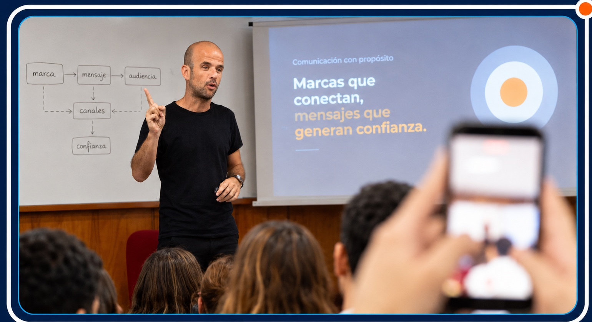

Strategic communication for universities and science.
ManuelBomheker

Communication to organize decisions and build trust.
Diagnosis, strategy and implementation for universities, scientific institutions and innovation initiatives that need to communicate their value more clearly.
When it makes sense to work together
Three signs that communication needs to move from isolated efforts to shared criteria.
The institution creates value, but struggles to explain it.
Research, transfer and education need a clear narrative for partners, funders, adopters and communities.
The channels exist, but they do not work as a system.
Web, social media, email and documents coexist without a shared architecture to prioritize information and guide decisions.
Relationships depend on individual effort.
Institutional knowledge needs processes and tools to sustain relationships beyond urgency.
From problems to system
A way of working that turns scattered communication into decisions, criteria and concrete tools.
Explain value
Translate research, transfer, education or innovation into clear messages for strategic audiences.
Organize channels and criteria
Define messages, priorities and workflows so web, social media, email and documents work as a system.
Sustain strategic relationships
Create processes and tools so relationships do not depend only on individual effort.
Track record
Experience in complex academic, scientific and innovation organizations.
View institutions and experience
Selected institutions and experience.
View institutions and experience
Selected institutions and experience.
Three ways to work together
Strategy, focused intervention or training, depending on the institution’s moment and the team’s capacity.
01Strategic consulting
Ongoing support to organize priorities, messages, processes and relationships.
- Institutional communication diagnosis
- Relationship and positioning strategy
- Governance, processes and decision criteria
- Communication for transfer, innovation or funding
02Tactical advisory
Focused interventions to organize a decision, a call, an identity or a narrative.
- Communication review and organization
- Institutional identity manual
- Proposals for grants and calls
- Strategic texts, documents and presentations for decision makers
03Training and mentoring
Workshops and clinics for scientists, communication teams and university incubators.
- Communicating the value of science
- Personal branding for researchers
- Pitch for science-based ventures
- Idea validation and business design
The starting point is to understand what is at stake and choose the right kind of support.
Book a free callBook a free call.
Tell me what you need to organize, what decision is at stake or what value you want to communicate more clearly. The form prepares a WhatsApp message to coordinate a first conversation.
Public ideas on university communication
Channels for interviews, classes, resources and work experiences.
YouTubeYouTube channel
YouTube channel
Communication for universities and science: interviews and classes on strategic communication and brand management for academic institutions.
View channelMediumBlog and resources
Blog and resources
Notes, resources and experiences on communication management, institutional diagnosis and work with academic organizations.
Read articlesLinkedInWork experiences
Work experiences
A place where I share lessons, cases, reflections and experiences connected to strategic communication, brand and institutional management.
Follow on LinkedIn